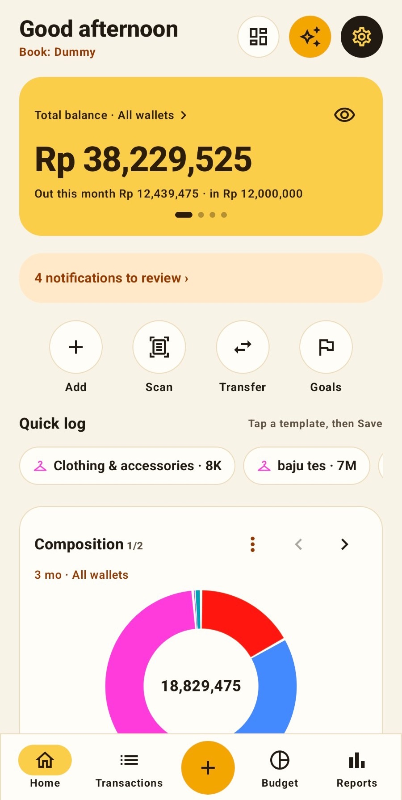

Amount
Rp 35,000
Coffee & snacksGoPehNow
1234567890000⌫
Save
✓ Saved · Rp 35,000
1 of 7
Log in 3 taps
Type the amount, then Save. Category, wallet and time are already filled in.
Save it as a template, then log in 2 taps from Home.
Saku is a personal money tracker. Log with one hand, let Saku read e-wallet screenshots and notifications on your phone, and see where your money goes.
Works without an account. Sign in only to sync and share books.

The same tour as in the app: seven features, one screen each. Swipe to continue.
Swipe to continue →
Built for how Indonesia pays: e-wallets, QRIS, bank transfers and cash.
Type the amount on a calculator keypad and save. Your last category and wallet are already picked. Save regular entries as templates.
Share an e-wallet screenshot to Saku. The amount, date and merchant are read on your phone, then you check them.
Once you allow it, payment notifications from banks and e-wallets become entries you only need to approve.
Many wallets, grouped the way you like. Invite a partner or family to one book, while private wallets stay private.
Charts you can tap down to the transaction. Budgets per category, savings goals and bill reminders.
Ask "how much did I spend on coffee this month?" and get the answer from your own records, with the transactions behind it.
Financial data is sensitive. Saku uses only what it needs and explains all of it, in line with Indonesia's Personal Data Protection Law (Law No. 27 of 2022).
The questions we hear most.
No. Without an account, Saku works fully on your phone. An account (Google or an email one-time code) is only needed to sync to other devices and share books.
Without an account, only on the phone. Once you sign in, structured transactions are stored on our server in Singapore. Details are in the Privacy Policy.
In the app: Settings › Account & sync › Delete account. No longer have the app? Follow the steps on Delete account.
Settings › Import & export › Full backup (JSON) or CSV. Saku can also import from other money apps.
No. Saku only keeps records. It does not move money and does not give investment advice. See the Terms of Use.